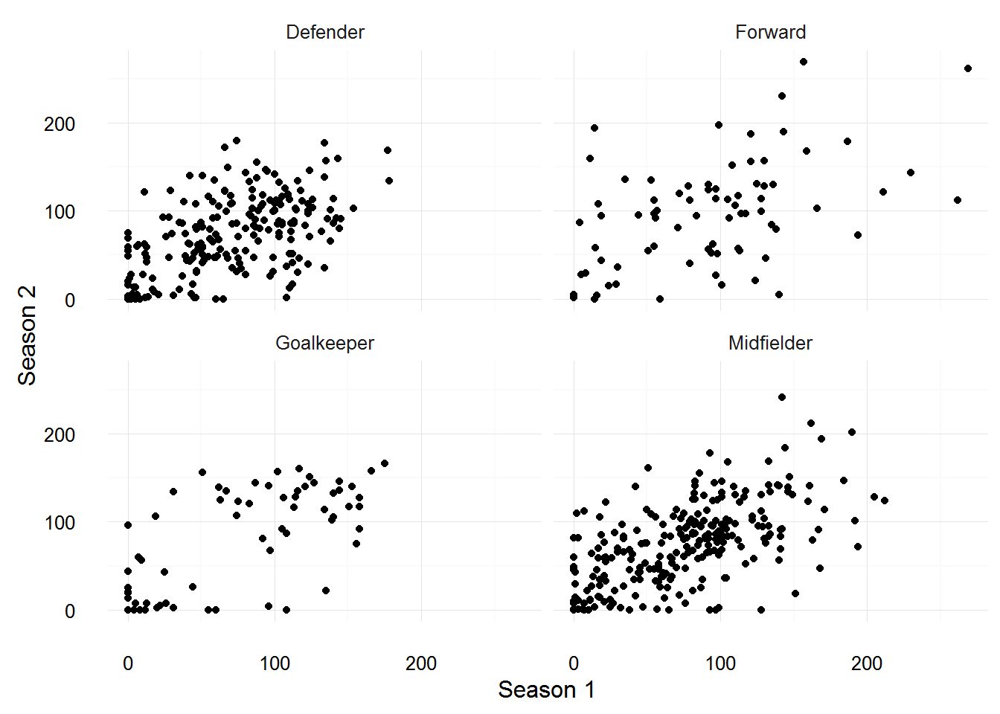

The pastseasons dataset contains performance data for past seasons for all current players in the fantasy.premierleague.com game. Not all players in the game have past data, those who are making their debut in the game, these players are still included in the dataset but their performance data is recorded as NA
Once the package has been loaded, to access the dataset:
data(pastseasons)The dataframe has dimensions 1920 rows and 24 columns.
str(pastseasons)## 'data.frame': 1920 obs. of 24 variables:
## $ id : num 1 1 1 1 1 1 1 2 3 3 ...
## $ name : chr "Szczesny" "Szczesny" "Szczesny" "Szczesny" ...
## $ pos : chr "Goalkeeper" "Goalkeeper" "Goalkeeper" "Goalkeeper" ...
## $ team : chr "Arsenal" "Arsenal" "Arsenal" "Arsenal" ...
## $ pts : num 47 47 47 47 47 47 47 76 38 38 ...
## $ value : num 5 5 5 5 5 5 5 5 5.5 5.5 ...
## $ pct : num 0.1 0.1 0.1 0.1 0.1 0.1 0.1 0.7 30.2 30.2 ...
## $ season : chr "2008/09" "2009/10" "2010/11" "2011/12" ...
## $ mins : num 0 0 1350 3420 2250 ...
## $ goals : num 0 0 0 0 0 0 0 0 0 0 ...
## $ assists : num 0 0 0 0 0 0 0 0 0 0 ...
## $ cs : num 0 0 6 13 10 16 3 8 0 0 ...
## $ ga : num 0 0 19 49 24 41 21 11 9 17 ...
## $ og : num 0 0 0 0 0 0 0 0 0 0 ...
## $ pens_svd: num 0 0 1 1 1 1 0 0 0 0 ...
## $ pens_msd: num 0 0 0 0 0 0 0 0 0 0 ...
## $ yel : num 0 0 1 2 1 2 1 0 1 0 ...
## $ red : num 0 0 0 0 0 0 0 0 0 0 ...
## $ saves : num 0 0 45 82 71 113 44 47 58 60 ...
## $ bonus : num 0 0 0 8 3 4 0 0 1 2 ...
## $ ea_ppi : num 0 0 0 469 314 475 172 241 0 0 ...
## $ bps : num 0 0 0 0 0 194 215 301 0 0 ...
## $ fin_val : num 4.5 4.5 4.3 5.9 5.3 5.9 5.2 5 6.4 6.5 ...
## $ ssn_pts : num 0 0 62 139 102 157 47 76 98 120 ...The pastseasons dataset could potentially be used to build a model to predict performance for the coming season, but unfortunately the dataset doesn’t include the pre-season data for each of those seasons. For example, Shay Given has previously played for Newcastle and Manchester City, but only his current club (Aston Villa) is recorded in the dataset.
A model based on the points a players scored in previous season is unfortunately not that great. I reduce the dataset so it only includes data for 2010/11, 2011/12, 2012/13, 2013/14 and 2014/15, and reduce the number of variables.
tmp <- subset(pastseasons, season == "2010/11" | season == "2011/12" | season == "2012/13" | season == "2013/14" | season == "2014/15",
select = c("name", "id", "pos", "team", "pct", "value", "season", "fin_val", "ssn_pts"))
dim(tmp)## [1] 1392 9# we need the reshape2 package, to create a 'long' dataframe, with one player per row
library(reshape2)
ssn2ssn <- dcast(tmp, name + id + pos + team + pct + value ~ season, value.var = "ssn_pts")
head(ssn2ssn)## name id pos team pct value 2010/11 2011/12 2012/13
## 1 Szczesny 1 Goalkeeper Arsenal 0.1 5.0 62 139 102
## 2 Ospina 2 Goalkeeper Arsenal 0.7 5.0 NA NA NA
## 3 Cech 3 Goalkeeper Arsenal 30.2 5.5 158 127 144
## 4 Koscielny 4 Defender Arsenal 17.8 6.0 85 103 88
## 5 Mertesacker 5 Defender Arsenal 15.2 5.5 NA 59 135
## 6 Gabriel 6 Defender Arsenal 0.2 5.0 NA NA NA
## 2013/14 2014/15
## 1 157 47
## 2 NA 76
## 3 146 38
## 4 155 120
## 5 157 121
## 6 NA 16# rename the variables with numbers in them (just for ease of typing later)
names(ssn2ssn)[7:10] <- paste0("s", 1:4)
# now plot season to season points
ggplot(ssn2ssn, aes(x = s1, y = s2)) +
geom_point() +
geom_point(aes(x = s2, y = s3)) +
geom_point(aes(x = s3, y = s4)) +
theme_minimal() +
labs(x = "Season 1", y = "Season 2") +
facet_wrap(~pos)